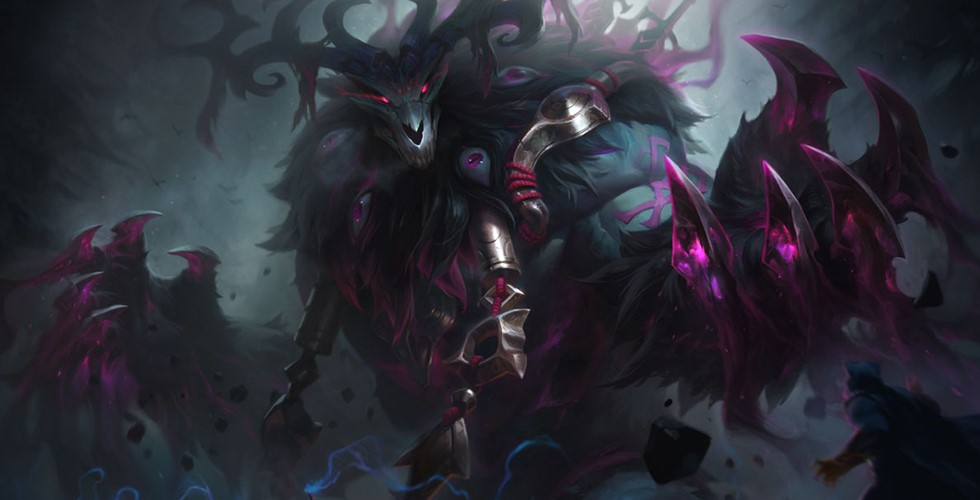

在一些人心中，他是雷霆咆哮，是滚雷风暴，是瓦尔海尔。另一些人心中，他是荒芜，是受过千万刀枪的巨熊，还是屹立者。但在那些依然遵循旧习古道的部族中，他被称为沃利贝尔。
破坏、力量、还有化为实体的风暴，沃利贝尔代表了所有不可阻挡的力量，也代表着弗雷尔卓德这片土地本身的怒火。早在凡尘种族来到世上之前，沃利贝尔和他的半神同胞们塑造了这片土地，并称之为沃尔瑞加德。传说中，他一掌下去，撕出了“五岔峡湾”；他与岩浆巨蟒隆德展开的史诗之战形成了无数条峡谷与沟壑；沃利贝尔最终击败了那只野兽，它流出的鲜血成为了弗雷尔卓德上的第一条河流，它留下的巨大骸骨形成了飞龙背山脉。
在先民部族的时代，野性的魔法汹涌奔放。沃利贝尔受到所有人的崇敬与膜拜，因为人们都需要他不羁的力量才能够生存。大战一次次打响，沃利贝尔每次都会带着自己的追随者冲上战场，他们身穿着刻有符文的战甲，铸造者正是他的兄长，熔炉的半神，奥恩。当时，兄弟俩情同钢铁，经常并肩作战，只不过奥恩从来都没那么渴望战斗。沃利贝尔在攻坚克难后的胜利中欣喜若狂，后来献给他的血祭越来越多，他的力量也越来越膨胀。
不多时日，沃利贝尔就和他的同胞们渐渐疏离，醉心于各自不同的追求。即便如此，他们之间并没有真正的分歧……直到后来新的思想开始取代古老的信仰。
三姐妹的势力崛起了，她们要掌控弗雷尔卓德并带来秩序。应当如何应对，诸位半神无法达成一致。以艾尼维亚为首的几位，倾向于跟三姐妹合作，而沃利贝尔和铁山猪则想要摧毁她们。其他半神则打算置之不理，因为这些渺小的生物终有一死，世世代代皆无例外。
沃利贝尔的目光看向了他的追随者——极为野蛮残暴的熊人族。只要有他们，他就能击败三姐妹。备战期间，他找到了奥恩，请他为自己麾下的战士们打造神兵利器。

但奥恩拒绝了。他不赞成熊人族的凶残，于是两位半神之间爆发了一场战斗。激战过后，沃利贝尔咒骂着自己兄长的名字，扔下了他刻有符文的战甲。从那以后，他只愿用尖牙、利爪、蛮力和雷霆作为武器。他并未因此而变得脆弱，恰恰相反，沃利贝尔发现自己释放出了全部的力量。
带着新生的怒火，他正面挑战了三姐妹其中之一，这个女人想要盗取半神的力量，为己所用。在她的整支军队面前，他将那个女人击倒，还令她永远失明——但他却无法阻止她早已推动的计谋。
几百年过去，虽然沃利贝尔奋力反抗，但人类的部族纷纷抛弃旧神，开始崇敬并膜拜三姐妹。
许多古老的习俗都已被遗忘。他看到人类部族躲藏在石墙的背后，而不是直面自然的严酷。他看到农民在土地上耕作，在牧场上放牧，而不是采集与狩猎。他看到一条条大河被水坝围堵，无法自由奔流。于是他发出愤怒的呼号。这不是他的弗雷尔卓德。这些改变发生得很缓慢——就像冰川的移动。但沃利贝尔终于意识到，人类的部族已经与这片土地的狂野灵魂彻底断绝，他们已经变得怯懦、顺从、软弱。这些弱者已经不再遵从古道，也不再崇敬古神。
愤怒与决心在他体内隆隆作响。他发誓要撕碎一切人类文明的痕迹，让弗雷尔卓德重返古态，回归真正的野性。人类将再次变得强壮。他将再次获得所有人的敬畏。
沃利贝尔的呼唤回荡于北地的群山与旷野，越来越多的弗雷尔卓德人开始响应。慢慢地，旧习与古道正在被人们记起并遵循，每当新的追随者加入，他的力量都在增长。
一场鲜血的清算在等待……而沃利贝尔正在向着那一刻狂奔。